Fonte: gare di altri paesi/India/biologia/NSEB_2023_Question.pdf · Apri PDF · apri PDF p.1
Cluster: Meccanica
Soluzioni (stessa cartella): · · · · · · · · · · ·
Problema 1
A turtle draws its head back into its shell when its shell is touched. After being touched repeatedly, however, the turtle no longer withdraws its head. This behaviour is an example of:
(a) Conditioning (b) Habituation (c) Associative learning (d) Kinesis
Topic: Newtonian Mechanics Metodi: Physical Modeling Competenze: Physical Reasoning Fonte: Testo (PDF) — p.3
Problema 2
During mating season, the belly of three-spined stickleback fish becomes red. The male sticklebacks show typical aggressive behaviour when they see a red-bellied male stickleback, or any red-coloured object in the vicinity. Identify another example of this type of behaviour from the following:
(a) Sparrow chicks exposing their gape for begging food from parents (b) Person regaining balance on losing his/her foothold (c) A dog sitting down on being pulled by the leash (d) An earthworm burrowing deeper in the soil in daytime
Topic: Newtonian Mechanics Metodi: Physical Modeling Competenze: Physical Reasoning Fonte: Testo (PDF) — p.3
Problema 3
Studies have shown that the rate of respiration of an organism varies with fluctuations in temperature. Identify the correct pairing of the curves I and II with the animals from the given options, respectively (Curve I and Curve II show respiratory movements per minute vs temperature):
(a) Mackerel Fish — Kangaroo (b) Grizzly Bear — Salmon fish (c) Penguin — Emu (d) Sea cow — Komodo dragon
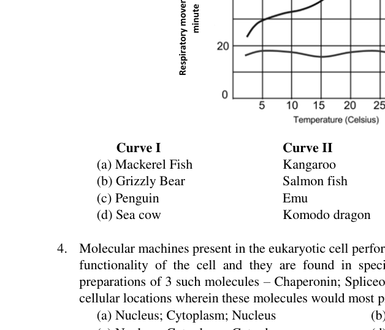
Respiratory rate vs temperature curves I and IITopic: Thermodynamics Metodi: Experimental Data Analysis, Graph Linearization Competenze: Experimental Data Analysis, Physical Reasoning Fonte: Testo (PDF) — p.3
Problema 4
Molecular machines present in the eukaryotic cell perform several functions to ensure the optimum functionality of the cell and they are found in specific locations in the cell. A student had preparations of 3 such molecules – Chaperonin; Spliceosome and calcium dependent kinases. The cellular locations wherein these molecules would most predominantly be present respectively are:
(a) Nucleus; Cytoplasm; Nucleus (b) Cytoplasm; Mitochondria; Cytoplasm (c) Nucleus; Cytoplasm; Cytoplasm (d) Cytoplasm; Nucleus; Cytoplasm
Topic: Newtonian Mechanics Metodi: Physical Modeling Competenze: Physical Reasoning Fonte: Testo (PDF) — p.3
Problema 5
A zoologist was studying the nervous system of some organisms. She observed that specimen M showed presence of a nerve net, N showed presence of ventral nerve cord with segmented ganglia and O showed a nerve ring with radial nerves. Based on the observations, M, N and O most likely could respectively be:
(a) Mouse; lizard and squid (b) Planaria; squid and hydra (c) Hydra; leech and sea star (d) Sea star; earthworm and squid
Topic: Newtonian Mechanics Metodi: Physical Modeling Competenze: Physical Reasoning Fonte: Testo (PDF) — p.4
Problema 6
Descriptions of the alimentary canals of four animals P, Q, R and S are given below:
P: Short intestine and colon; small cecum. Q: Simple stomach; large cecum. R: Short intestine; cecum absent. S: Four-chambered stomach with large rumen; long small and large intestine.
Animals P, Q, R and S respectively could be:
(a) Carnivore; insectivore; non-ruminant herbivore; ruminant herbivore (b) Carnivore; non-ruminant herbivore; insectivore; ruminant herbivore (c) Non-ruminant herbivore; carnivore; insectivore; ruminant herbivore (d) Insectivore; nonruminant herbivore; ruminant herbivore; carnivore
Topic: Newtonian Mechanics Metodi: Physical Modeling Competenze: Physical Reasoning Fonte: Testo (PDF) — p.4
Problema 7
The plasma membrane of the root hair cells selectively allows absorbed minerals to pass through plasmodesmata into the endodermal cells which, then enter the xylem vessels. The indiscriminate absorption of minerals through apoplastic route, on the other hand, may admit undesirable minerals. This is prevented by:
(a) Glycerolipids in membranes of pericycle cells (b) Suberin in the wall of endodermal cells (c) Lignin in the wall of xylem cells (d) Sulfolipids in the membranes of xylem parenchyma cells
Topic: Fluid Mechanics Metodi: Physical Modeling Competenze: Physical Reasoning Fonte: Testo (PDF) — p.4
Problema 8
100 bacterial cells are inoculated in a growth medium. Each cell takes 30 minutes to duplicate. Select the number of cells present in the broth after 20 hours of incubation, assuming no cell death.
(a) (b) (c) (d)
Topic: Kinetic Theory Metodi: Kinematic Equations, Dimensional Analysis Competenze: Mathematical Modeling, Physical Reasoning Fonte: Testo (PDF) — p.4
Problema 9
It is observed that glucose absorption is slow if the energy drink contains only glucose as compared to drinks that contain glucose along with small amount of salt. Which of the following correctly explains this?
(a) Glucose absorption is carried out by a membrane protein which is symporter by nature. (b) Glucose absorption is carried out by a membrane protein which is antiporter by nature. (c) Na and Cl ions interact with glucose molecules and break the hydration shell around them, making it easier for transport across membrane. (d) Na increases membrane potential thereby increasing the rate of transport.
Topic: Electrostatics Metodi: Physical Modeling Competenze: Physical Reasoning Fonte: Testo (PDF) — p.4
Problema 10
Digestion of ingested food can occur in two ways. Intracellular — by taking the food material inside the cell and then breaking it using digestive enzymes (e.g. Amoeba). Extracellular — by secreting digestive enzymes, breaking the molecules and transporting them inside the cell (e.g. Fungus). What type of digestion is carried out in humans?
(a) Intracellular (b) Extracellular (c) Mainly intracellular but partially extracellular (d) Mainly extracellular but partially intracellular
Topic: Newtonian Mechanics Metodi: Physical Modeling Competenze: Physical Reasoning Fonte: Testo (PDF) — p.4
Problema 11
Amytal is an inhibitor of Complex I involved in Electron Transport Chain (ETC). A cell free system was used to study the effect of amytal on electron transport chain. What effect do you expect on the Electron Transport Chain (ETC) system?
(a) Flow of electron will completely stop. (b) There will be fewer electrons that will keep the ETC active. (c) Electron flow through ETC will remain normal. (d) Electrons will start flowing in reverse direction.
Topic: Electrostatics Metodi: Physical Modeling Competenze: Physical Reasoning Fonte: Testo (PDF) — p.5
Problema 12
Smooth endoplasmic reticulum is NOT prevalent in which of the following?
(a) Ovary (b) Testis (c) Adipose tissue (d) Pancreas
Topic: Newtonian Mechanics Metodi: Physical Modeling Competenze: Physical Reasoning Fonte: Testo (PDF) — p.5
Problema 13
A protein contains 90 amino acids. During its synthesis how many times t-RNA gets attached to the A-site of ribosome?
(a) 30 (b) 90 (c) 89 (d) 270
Topic: Newtonian Mechanics Metodi: Kinematic Equations Competenze: Mathematical Modeling Fonte: Testo (PDF) — p.5
Problema 14
In the skeletal muscle cells, the calcium pump in the sarcoplasmic reticulum functions to:
(a) Maintain Ca ions balance in the cytosol. (b) Release Ca ions in the cytosol and bringing about contraction of muscles. (c) Collect Ca ions back into sarcoplasmic reticulum and induce contraction of muscles. (d) Induction of apoptosis in muscle cells.
Topic: Electrostatics Metodi: Physical Modeling Competenze: Physical Reasoning Fonte: Testo (PDF) — p.5
Problema 15
A scientist wants to synthesize recombinant DNA. Identify the correct pair of enzymes that he will use to (i) Cut the vector DNA and (ii) Seal the DNA after inserting the fragment of interest, respectively:
(a) Exonuclease and ligase (b) Helicase and Nuclease (c) Helicase and ligase (d) Endonuclease and ligase
Topic: Newtonian Mechanics Metodi: Physical Modeling Competenze: Physical Reasoning Fonte: Testo (PDF) — p.5
Problema 16
The adjoining diagrams show the cross section of body of an invertebrate, through the middle region of the body. (i) and (ii) are two different cross sections.
Which of the following animals respectively exhibit these body forms?
(a) (i) earthworm, (ii) cockroach (b) (i) planaria, (ii) Tapeworm (c) (i) cockroach, (ii) Ascaris (d) (i) Planaria, (ii) cockroach
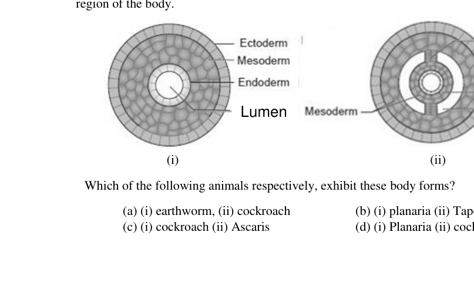
Cross sections of invertebrate body forms (i) and (ii)Topic: Newtonian Mechanics Metodi: Physical Modeling Competenze: Diagrammatic Reasoning Fonte: Testo (PDF) — p.5
Problema 17
Presence of two human traits X and Y were compared in the chimpanzee and hyena, a social carnivore. The results obtained are shown below:
| Trait | Chimpanzee | Hyena |
|---|---|---|
| X | High | Moderate |
| Y | Rudimentary | No |
Traits X and Y are most likely and respectively the:
(a) tool making and bipedal locomotion (b) degree of intelligence and tool making (c) bipedal locomotion and cooperation in hunting (d) cooperation in hunting and degree of intelligence
Topic: Newtonian Mechanics Metodi: Physical Modeling Competenze: Physical Reasoning Fonte: Testo (PDF) — p.6
Problema 18
A 65-year-old male admitted to the hospital showed symptoms like severe inflammatory response, kidney dysfunction, low levels of Na and high levels of K in the body. Which part of his endocrine system most probably must be impaired or dysfunctional?
(a) Hypothalamus (b) Adrenal cortex (c) Adrenal medulla (d) Parathyroid gland
Topic: Newtonian Mechanics Metodi: Physical Modeling Competenze: Physical Reasoning Fonte: Testo (PDF) — p.6
Problema 19
Percent nitrogen in different components within the leaf of two plant species M and N is shown in the following diagrams.
M and N most likely respectively indicate:
(a) C3 and C4 plants (b) Sun and Shade growing plants (c) C3 and CAM plants (d) Plants with low and high water availability
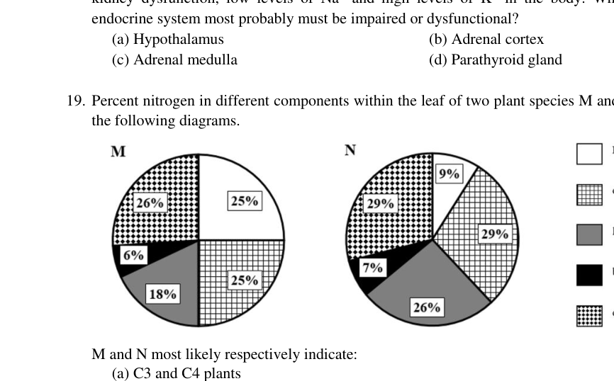
Percent nitrogen in leaf components for plants M and NTopic: Thermodynamics Metodi: Experimental Data Analysis Competenze: Experimental Data Analysis, Physical Reasoning Fonte: Testo (PDF) — p.6
Problema 20
Humans are able to smell L and D forms of the aromatic compound, carvone, distinctively because:
(a) They bind to the same olfactory receptor but differently. (b) The same olfactory receptor differentially forms unique complex with each isomer and triggers different nerve impulses. (c) Olfactory receptors are chiral and are distinct for each isomer. (d) The enantiomer flips to attach with the same receptor at a different site.
Topic: Newtonian Mechanics Metodi: Physical Modeling Competenze: Physical Reasoning Fonte: Testo (PDF) — p.6
Problema 21
An Ecological research centre had studied a population of grasshoppers that live in a grassland and feed on grasses. A subpopulation of the same grasshoppers was observed to have access to a nearby forest where some individuals of the population fed on toxic herbs. After several decades when the same grasshopper population was studied again, it was observed that the grasshoppers that used to feed on toxic herbs in the forest were breeding true within themselves, isolated from the original grassland population. The Ecologists could identify the process as speciation.
This is an example of which type of speciation?
(a) Peripatric (b) Allopatric (c) Sympatric (d) Parapatric
Topic: Newtonian Mechanics Metodi: Physical Modeling Competenze: Physical Reasoning Fonte: Testo (PDF) — p.7
Problema 22
Effect of sea water acidification is shown in the following graph for four aquatic animals namely crustaceans, echinoderms, fishes and molluscs.
The species belonging to R is most likely:
(a) Crustacean (b) Fish (c) Echinoderm (d) Mollusc
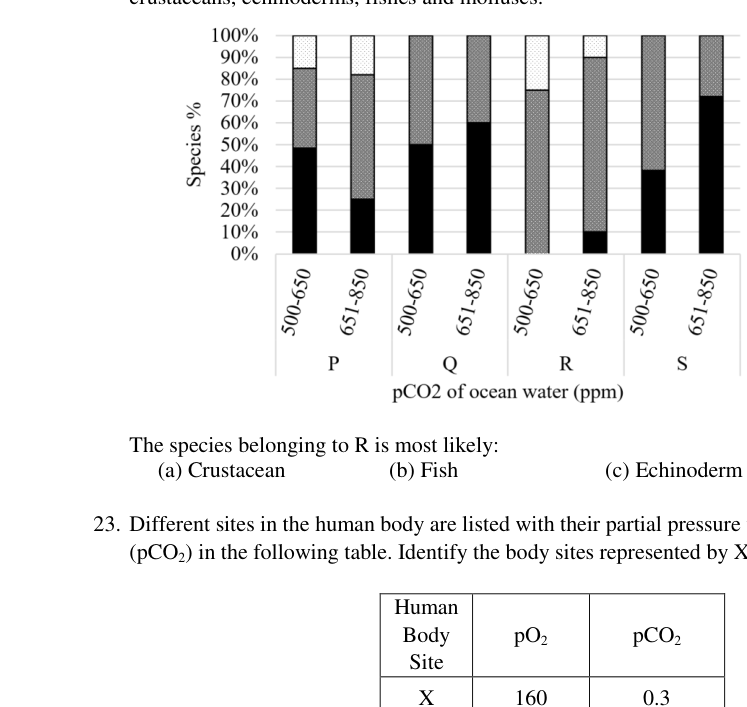
Sea water acidification effect graph on aquatic animalsTopic: Thermodynamics Metodi: Experimental Data Analysis, Graph Linearization Competenze: Experimental Data Analysis, Physical Reasoning Fonte: Testo (PDF) — p.7
Problema 23
Different sites in the human body are listed with their partial pressure values of O () and CO () in the following table. Identify the body sites represented by X, Y and Z.
| Human Body Site | ||
|---|---|---|
| X | 160 | 0.3 |
| Y | 104 | 40 |
| Z | <40 | >45 |
(a) X – Exhaled air, Y – Alveolar capillaries, Z – Pulmonary vein (b) X – Inhaled air, Y – Pulmonary vein, Z – Tissues (c) X – Inhaled air, Y – Systemic arteries, Z – Pulmonary arteries (d) X – Inhaled air, Y – Alveolar space, Z – Pulmonary arteries
Topic: Fluid Mechanics Metodi: Dimensional Analysis, Physical Modeling Competenze: Mathematical Modeling, Physical Reasoning Fonte: Testo (PDF) — p.7
Problema 24
Recombination frequency between some genes is B – D > A – C > A – B. What could be the sequence of these genes on a chromosome?
(a) D-B-C-A (b) B-A-C-D (c) D-A-B-C (d) C-A-B-D
Topic: Newtonian Mechanics Metodi: Physical Modeling Competenze: Mathematical Modeling, Physical Reasoning Fonte: Testo (PDF) — p.7
Problema 25
During complete oxidation of substrate X to CO and HO, a total of 110 H ions were transported out across the inner mitochondrial membrane. If 4 H ions are sent back to generate one ATP, calculate the number of ATPs generated and NADH oxidized (Assume that FADH is NOT involved).
(a) 11 NADH and 28 ATPs (b) 10 NADH and 32 ATPs (c) 11 NADH and 38 ATPs (d) 10 NADH and 28 ATPs
Topic: Thermodynamics Metodi: Conservation Laws, Dimensional Analysis Competenze: Mathematical Modeling, Physical Reasoning Fonte: Testo (PDF) — p.8
Problema 26
Cells P, Q and R are mutants for enzymes x, y and z respectively. These enzymes are involved in the biosynthesis of the same amino acid. When P, Q and R were co-cultured in a plate lacking the amino acid, strains P and Q grew while R did not. When P and Q were co-cultured, Q grew while P did not. Find the sequence of the enzymes involved in the biosynthesis pathway of the amino acid.
(a) z, y, x (b) x, y, z (c) y, z, x (d) y, x, z
Topic: Newtonian Mechanics Metodi: Physical Modeling Competenze: Mathematical Modeling, Physical Reasoning Fonte: Testo (PDF) — p.8
Problema 27
Fresh leaves from two different plant species M and N were separately treated with sucrose solution to observe the stomatal status. This treatment was done (i) in the presence of light and (ii) in the absence of light. Following observations were recorded:
| Leaf M Before | Leaf M After | Leaf N Before | Leaf N After | |
|---|---|---|---|---|
| In presence of light | Stomata open | Stomata closed | Stomata closed | Stomata closed |
| In absence of light | Stomata closed | Stomata closed | Stomata open | Stomata closed |
If osmosis is assumed to be absent, which of the following statements is TRUE?
(a) M & N are both dicots (b) M is a C-4 plant (c) M is a C-3 plant; N is a CAM plant (d) M is a CAM plant; N is a C-4 plant
Topic: Thermodynamics Metodi: Experimental Data Analysis, Physical Modeling Competenze: Experimental Data Analysis, Physical Reasoning Fonte: Testo (PDF) — p.8
Problema 28
Which of the following statements about Ubiquinone is WRONG?
(a) It is an iron containing protein like cytochrome. (b) It is a small hydrophobic molecule. (c) It is a co-enzyme. (d) It is not a protein.
Topic: Newtonian Mechanics Metodi: Physical Modeling Competenze: Physical Reasoning Fonte: Testo (PDF) — p.8
Problema 29
Which of the following statements is correct about the G phase of the cell cycle?
(a) The G phase arrests the cell division and does not allow it to continue cell division ever again. (b) Once cells come out of the G phase, they directly start DNA synthesis. (c) The G phase is a preparatory phase. (d) Cells enter the G phase post the G phase.
Topic: Newtonian Mechanics Metodi: Physical Modeling Competenze: Physical Reasoning Fonte: Testo (PDF) — p.8
Problema 30
In corn plants, a dominant allele ‘I’ inhibits kernel colour expression, while the recessive allele ‘i’ in homozygous condition permits colour expression. At a different locus, the dominant allele ‘P’ controls purple kernel colour while homozygous recessive genotype ‘pp’ creates red kernels. If plants heterozygous at both loci are crossed what will be the phenotypic ratio of purple : red : colourless?
(a) 3:1:12 (b) 12:4:0 (c) 9:4:3 (d) 3:4:9
Topic: Newtonian Mechanics Metodi: Statistical Averaging, Physical Modeling Competenze: Mathematical Modeling, Physical Reasoning Fonte: Testo (PDF) — p.8
Problema 31
A man with haemophilia (a recessive sex linked condition) has a daughter of normal phenotype. She marries a man who is not haemophilic. If the married couple has four sons, what is the possibility that all four will be haemophilic?
(a) 1/4 (b) 1/32 (c) 1/16 (d) 1/8
Topic: Newtonian Mechanics Metodi: Statistical Averaging Competenze: Mathematical Modeling, Physical Reasoning Fonte: Testo (PDF) — p.9
Problema 32
The distribution of some mushroom communities in two habitats I and II are shown in the given figures.
Which of the following statements regarding these habitats is correct?
(a) Habitat I has greater species richness than II. (b) Habitat II has a more even distribution of species than I. (c) Habitat II has greater species evenness than I. (d) Habitat I is more diverse than II.
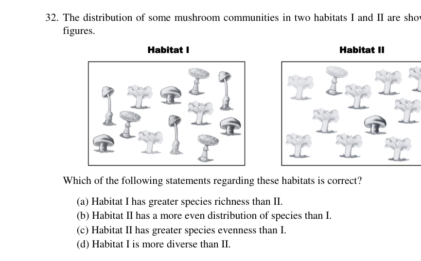
Mushroom community distribution in habitats I and IITopic: Newtonian Mechanics Metodi: Experimental Data Analysis, Physical Modeling Competenze: Diagrammatic Reasoning, Physical Reasoning Fonte: Testo (PDF) — p.9
Problema 33
A cell suspension has a concentration of cells/mL. An analyst diluted the suspension to a concentration of cells/mL. How much reduction in concentration did the analyst achieve?
(a) 50% (b) 6 log (c) 5 log (d) 2 log
Topic: Order-of-Magnitude Estimation Metodi: Dimensional Analysis, Order-of-Magnitude Estimation Competenze: Mathematical Modeling, Physical Reasoning Fonte: Testo (PDF) — p.9
Problema 34
Note the following processes:
i. Mutation ii. Recombination iii. Post-translational modifications iv. Crossing over during meiosis v. Alternative splicing of RNA transcripts
According to the findings of Human Genome Project, there are about 25000 genes; but there is evidence for greater number of different polypeptides. Which of the above-mentioned processes might explain the discrepancy between the number of genes and the number of polypeptides?
(a) i and ii (b) iii and v (c) i, ii and iv (d) All of the above
Topic: Newtonian Mechanics Metodi: Physical Modeling Competenze: Physical Reasoning Fonte: Testo (PDF) — p.9
Problema 35
Cells of the lower layers of human skin divide and replace dead cells. Why it is not correct to say that they are similar to plant meristem? Choose the correct reason from the following options.
(a) They are devoid of any cell wall. (b) They are not isodiametric in shape. (c) They can replace original cells only and not any other cell types. (d) They divide by astral mitosis and show the presence of centriole.
Topic: Newtonian Mechanics Metodi: Physical Modeling Competenze: Physical Reasoning Fonte: Testo (PDF) — p.9
Problema 36
Thymus gland is always the preferred gland for DNA extraction because:
(a) Being a soft gland, extraction can be easily done. (b) Being a vestigial organ in adults, it can be easily used for extraction. (c) The majority of cells in the gland are lymphocytes which have the greatest ratio of nucleus to cytoplasm. (d) The number of dividing cells in the gland at any given point of time is always high.
Topic: Newtonian Mechanics Metodi: Physical Modeling Competenze: Physical Reasoning Fonte: Testo (PDF) — p.10
Problema 37
The TCA cycle is an amphibolic pathway. Anaplerotic reactions are such metabolic pathways that replenish TCA cycle intermediates when they leak away from the cycle. The leakage of Oxaloacetate from the TCA cycle forms which of the following?
(a) Porphyrins (b) Pyrimidines (c) Acetyl CoA (d) Mannose
Topic: Thermodynamics Metodi: Physical Modeling Competenze: Physical Reasoning Fonte: Testo (PDF) — p.10
Problema 38
Observe the picture given below. It is a cross section of a leaf of an herbaceous perennial plant and the bar is equivalent to 35 m. ‘pa’ represents parenchyma, ‘vb’ represents vascular bundles, and ‘g’ represents glandular hair.
Which of the following respectively represent I and II marked in the picture? (Choose the most appropriate one):
(a) Adaxial epidermis and abaxial ectoderm (b) Endodermis and Epidermis (c) Abaxial epidermis and adaxial epidermis (d) Lower ectoderm and Upper ectoderm
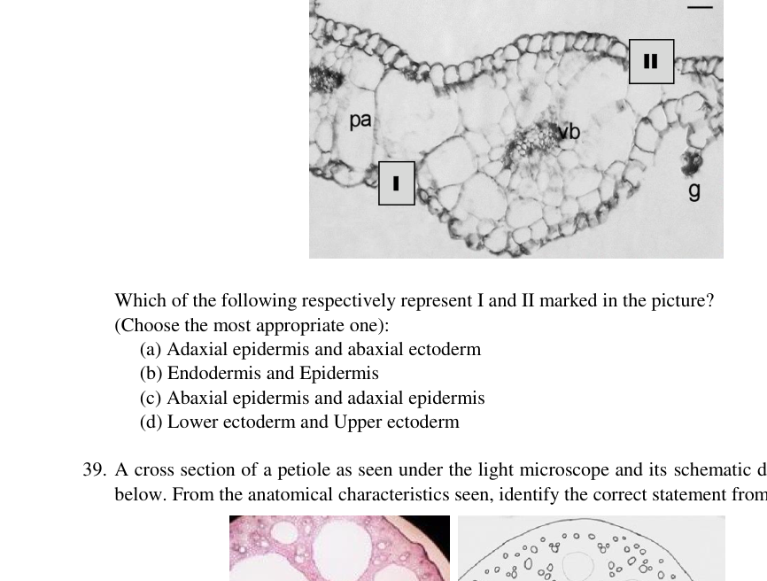
Cross section of herbaceous perennial plant leaf with I and II markedTopic: Newtonian Mechanics Metodi: Physical Modeling Competenze: Diagrammatic Reasoning, Physical Reasoning Fonte: Testo (PDF) — p.10
Problema 39
A cross section of a petiole as seen under the light microscope and its schematic diagram is given below. From the anatomical characteristics seen, identify the correct statement from the following:
(a) The presence of empty spaces in parenchyma indicates a dying petiole. (b) The thick epidermis indicates the plant to be found in highly saline areas. (c) The dense vascular bundles to the periphery indicate the plant to be from an arid zone. (d) Air filled spaces indicate the plant can survive in low oxygen areas.
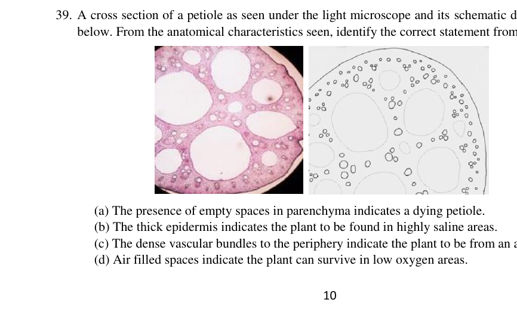
Cross section of petiole under light microscope with schematicTopic: Fluid Mechanics Metodi: Physical Modeling Competenze: Diagrammatic Reasoning, Physical Reasoning Fonte: Testo (PDF) — p.10
Problema 40
It is observed that plant ‘M’ requires 3000 ATPs and 1200 NADPH for synthesis of starch; while the plant ‘N’ requires 1800 ATPs and 1200 NADPH to synthesise the same amount of starch. Plant ‘M’ and ‘N’ respectively could be:
(a) Sorghum and sugarcane (b) Rice and Tomato (c) Maize and Wheat (d) A tropical plant and a succulent xerophyte
Topic: Thermodynamics Metodi: Conservation Laws, Dimensional Analysis Competenze: Mathematical Modeling, Physical Reasoning Fonte: Testo (PDF) — p.11
Problema 41
In one of the bacterium of Acetobacter family, it was found that the enzyme, succinate CoA-synthetase was absent. The bacteria are, however, useful in the production of vinegar since they use an alternate enzyme. In this context, which of the following statements is correct?
(a) These bacteria appear to have adapted to utilize the abundant citrate in its environment. (b) These bacteria appear to have adapted to utilize the abundant lactate in its environment. (c) These bacteria appear to have adapted to utilize the abundant acetate in its environment. (d) These bacteria appear to have adapted to utilize the abundant nitrate in its environment.
Topic: Thermodynamics Metodi: Physical Modeling Competenze: Physical Reasoning Fonte: Testo (PDF) — p.11
Problema 42
Lagomorphs like rabbit are caecal fermenters and they produce faecal pellets from caecum. In this context, identify from the following, the most appropriate statement that explains this adaptation:
(a) The fibre digestion takes place in the caecum using microbes that are live in the caecum. (b) They produce soft faeces containing nutrients from the cecum, in the night, which they eat again. (c) They cannot chew the cud like bovines but they retain food in caecum for a long time to digest the fibre. (d) They produce faeces only in the daytime and allow food to remain within the gut overnight to allow digestion of fibres.
Topic: Newtonian Mechanics Metodi: Physical Modeling Competenze: Physical Reasoning Fonte: Testo (PDF) — p.11
Problema 43
The image shows a unique characteristic seen in a group of arthropods. The arrows point to which of the following?
(a) Segmental Gills (b) Segmental Spiracles (c) Book lungs (d) Segmental tracheae
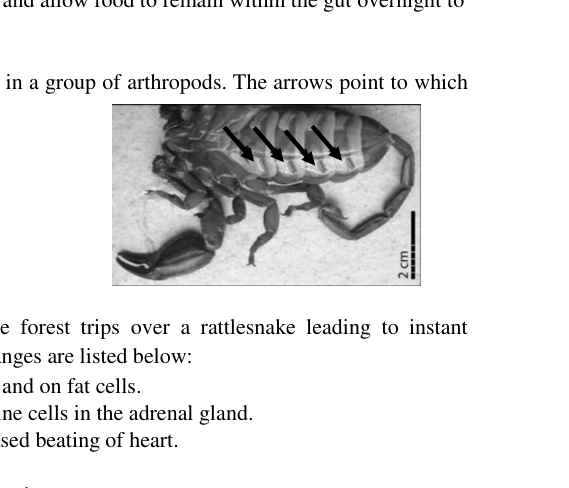
Arthropod image with arrows indicating characteristic structuresTopic: Newtonian Mechanics Metodi: Physical Modeling Competenze: Diagrammatic Reasoning Fonte: Testo (PDF) — p.11
Problema 44
An individual taking a leisurely walk in the forest trips over a rattlesnake leading to instant changes in the physiology. A few possible changes are listed below:
(i) Epinephrine binds to receptors in liver and on fat cells. (ii) The nervous system stimulates endocrine cells in the adrenal gland. (iii) Binding of epinephrine leads to decreased beating of heart. (iv) Glycogen formation increases. (v) Blood vessels in the digestive tract constrict. (vi) Pumping of blood increases.
The changes that would occur in the given situation are:
(a) (i), (ii), (iv) and (vi) (b) (ii), (iv) and (vi) (c) (i), (ii), (v) and (vi) (d) (i), (iii) and (iv)
Topic: Newtonian Mechanics Metodi: Physical Modeling Competenze: Physical Reasoning Fonte: Testo (PDF) — p.11
Problema 45
Three types of mouth parts in insects which are categorised based on the position of head with respect to the long axis of the body and the direction of the mouth parts. These are depicted below, marked as 1, 2 and 3. Match the three insects; X – Grasshopper; Y – Earwig; Z – Cicada with the correct type of the mouth parts.
(a) X = 1, Y = 2, Z = 3 (b) X = 2, Y = 3, Z = 1 (c) X = 2, Y = 1, Z = 3 (d) X = 1, Y = 3, Z = 2
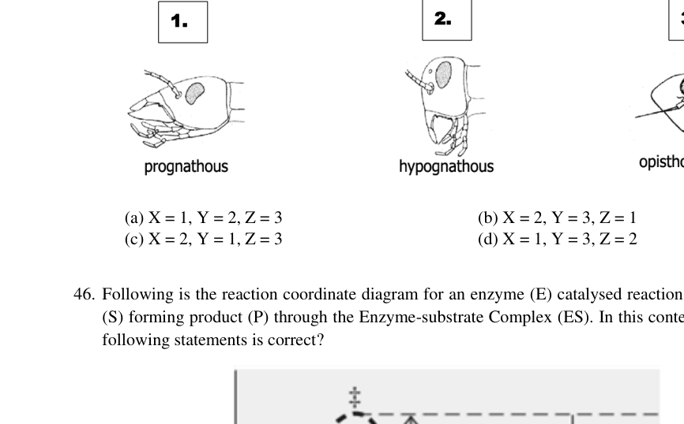
Three insect mouth part types labelled 1, 2, and 3Topic: Newtonian Mechanics Metodi: Physical Modeling Competenze: Diagrammatic Reasoning, Physical Reasoning Fonte: Testo (PDF) — p.12
Problema 46
Following is the reaction coordinate diagram for an enzyme (E) catalysed reaction using substrate (S) forming product (P) through the Enzyme-substrate Complex (ES). In this context which of the following statements is correct?
(a) Enzyme lowers the activation energy essential for the substrate to move to transition state. (b) Enzyme catalyzed reaction is a two-step reaction. (c) Enzyme provides energy to the substrate. (d) Enzyme helps the substrate to overcome the transition state faster to move to product state.
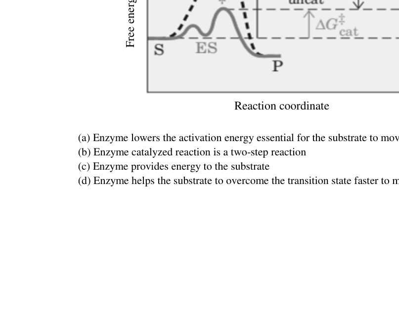
Reaction coordinate (Free energy G) diagram for enzyme-catalysed reactionTopic: Thermodynamics Metodi: Energy Conservation Method, Physical Modeling Competenze: Diagrammatic Reasoning, Physical Reasoning Fonte: Testo (PDF) — p.12
Problema 47
Following is the diagram representing transport of hydrophilic molecules across the membrane, mediated through transporter protein. What can you conclude from the given diagram?
(a) Transporter protein irreversibly converts the substrate to a transportable form. (b) Transporter protein increases the free energy (G) for transmembrane diffusion of the solute. (c) Transporter protein provides a hydrophobic passageway for the movement of molecules. (d) Transporter protein removes the hydration shell and prepares the molecule to move across the membrane.
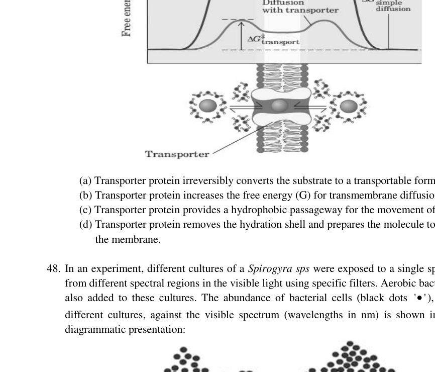
Diagram of hydrophilic molecule transport across membrane via transporter proteinTopic: Thermodynamics Metodi: Energy Conservation Method, Physical Modeling Competenze: Diagrammatic Reasoning, Physical Reasoning Fonte: Testo (PDF) — p.13
Problema 48
In an experiment, different cultures of a Spirogyra sps were exposed to a single spectrum of light from different spectral regions in the visible light using specific filters. Aerobic bacterial cells were also added to these cultures. The abundance of bacterial cells (black dots), in each of the different cultures, against the visible spectrum (wavelengths in nm) is shown in the following diagrammatic presentation:
Select the correct conclusion from the statements given below:
(a) Green light leads to increased oxygen production. (b) Green light is absorbed maximum by Spirogyra sps. (c) Red light results in maximum oxygen production. (d) Bacterial cells absorb red light.
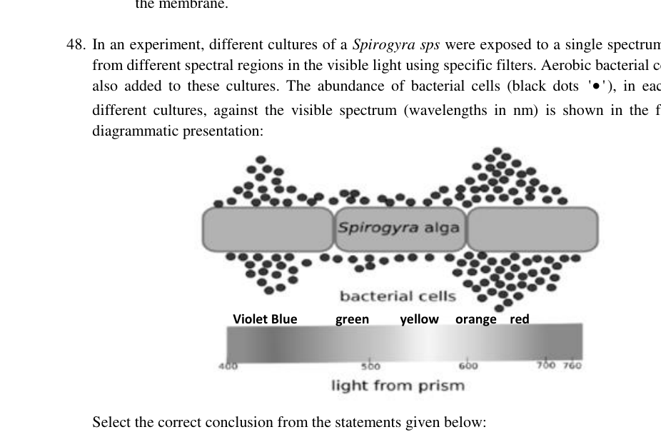
Bacterial abundance vs visible light wavelength for Spirogyra culturesTopic: Wave Optics, Geometric Optics Metodi: Experimental Data Analysis, Physical Modeling Competenze: Experimental Data Analysis, Physical Reasoning Fonte: Testo (PDF) — p.13
Problema 49
Secondary succession is seen in forests that are affected by fires. The following graphic presentation compares post-fire recovery of vegetation in slopes and valleys against the recovery time in years.
Which of the following is/are correct?
(a) The recovery along the slopes is faster during the middle stage of succession after fire as compared to valley. (b) The recovery along the slopes is slower during the middle stages of succession after fire as compared to valley. (c) The succession sets in faster along the valley than the slope after fire. (d) The succession sets in slower along the valley than the slope after fire.
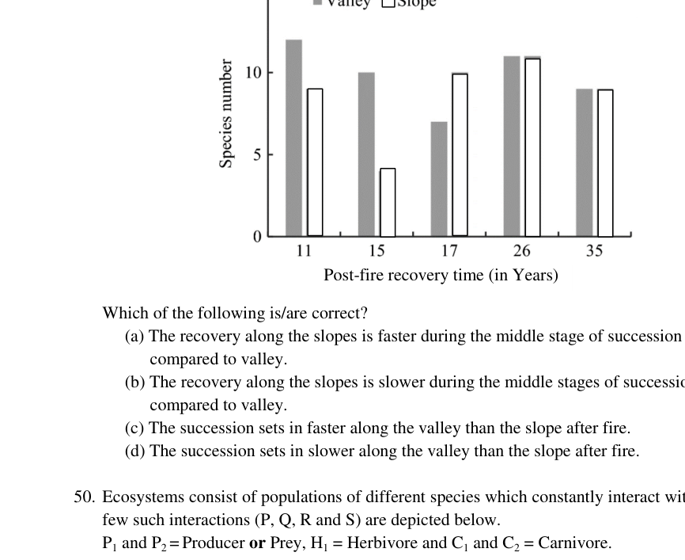
Post-fire vegetation recovery in slopes vs valleys over timeTopic: Newtonian Mechanics Metodi: Experimental Data Analysis, Graph Linearization Competenze: Experimental Data Analysis, Physical Reasoning Fonte: Testo (PDF) — p.14
Problema 50
Ecosystems consist of populations of different species which constantly interact with each other. A few such interactions (P, Q, R and S) are depicted below. P1 and P2 = Producer or Prey, H1 = Herbivore and C1 and C2 = Carnivore.
Which of the following is/are correct description/s of these interactions?
(a) Indirect mutualism between C1 and P1 in S. (b) Apparent competition between P1 and P2 in Q. (c) Commensalism between C1 and C2 in P. (d) Indirect mutualism between C1 and C2 in R.
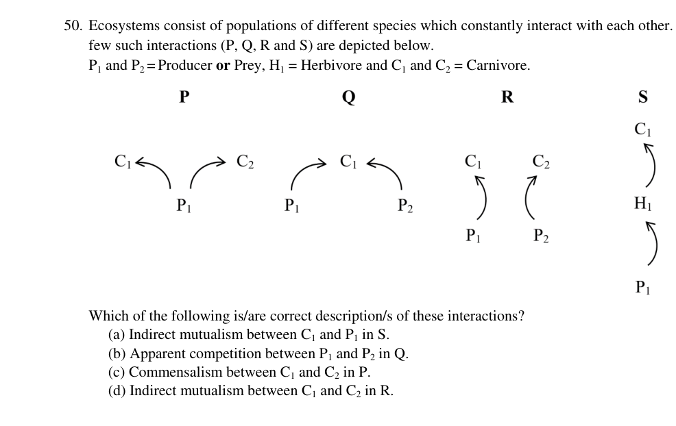
Ecological interaction diagrams P, Q, R and S with producers, herbivore, carnivoresTopic: Newtonian Mechanics Metodi: Physical Modeling Competenze: Diagrammatic Reasoning, Physical Reasoning Fonte: Testo (PDF) — p.14
Problema 51
Which of the following is true about protein translocation?
(a) Ribosomes can recognize the signal sequence in the protein and dock them on endoplasmic reticulum (ER). (b) Protein translocation into the endoplasmic reticulum (ER) takes place simultaneously along with translation. (c) A fully folded protein can enter the endoplasmic reticulum (ER) from the cytosol. (d) Protein synthesis may involve free ribosomes, which are eventually docked to the endoplasmic reticulum (ER).
Topic: Newtonian Mechanics Metodi: Physical Modeling Competenze: Physical Reasoning Fonte: Testo (PDF) — p.15
Problema 52
Nereis is a worm that burrows in the floor of brackish estuaries. Its head and anterior segments protrude from the burrow to feed on the surface around the burrow. During feeding a variety of stimuli induce the worm to jerk back into its burrow. For an experimental study, a behavioural scientist could easily get the worms to live in glass tubes in shallow basins of water. He recorded the retracting response of the worms when two types of stimuli – a moving shadow and mechanical shock by jarring of the basin were given to the worms at 1 min intervals. The results obtained for the experimental set ups (I and II) are shown where response to both stimuli are studied in set up I while that to only one stimulus is studied in set up II.
Which of the following statements is/are true with reference to the results obtained?
(a) Response in IA represents habituation while that in IIC represents sensitization. (b) Habituation is always faster for a moving shadow stimulus than that for a mechanical shock stimulus. (c) Sensory adaptation is always a permanent adaptation. (d) Habituation to moving shadow stimulus is independent of the response to mechanical stimulus.
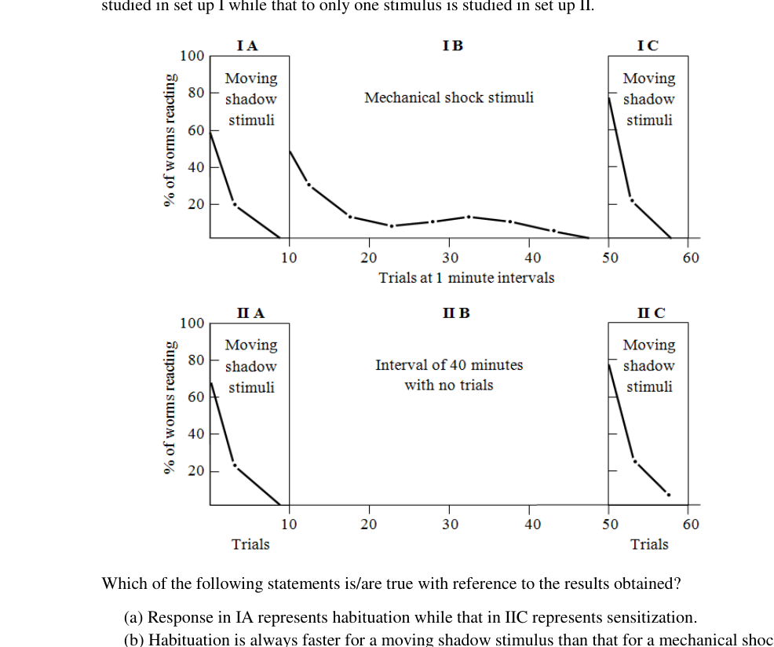
Retracting response results for Nereis worm experimental set ups I and IITopic: Newtonian Mechanics Metodi: Experimental Data Analysis, Physical Modeling Competenze: Experimental Data Analysis, Physical Reasoning Fonte: Testo (PDF) — p.15
Problema 53
The mechanosensory lateral-line system in fishes consists of thousands of neuromast sensory cells distributed across the body of the animal. In nature, the larvae of Zebra fish (Danio rerio) are generally predated by fish which use suction pressure to catch them. For an experiment 2 groups of larvae were prepared. One group was ‘caudal neuromasts ablated’ (CNA) while the other one was ‘middle neuromasts ablated’ (MNA). These larvae were exposed to mild suction pressure created in water. As they tried to avoid the suction current, the positions of the two groups of larvae were recorded from the start to finish of the experiment. These recordings were plotted as shown in the figure below. [Note: The suction source is located at the origin of the coordinate system]
Which of the following are the correct interpretations?
(a) The larvae with caudal neuromasts ablated are more efficient in avoiding the suction as compared to the larvae with middle neuroblasts ablated. (b) The larvae with middle neuromasts ablated are more efficient in avoiding the suction as compared to the larvae with caudal neuroblasts ablated. (c) It may be deduced that both the location and number of neuromasts play a role in detecting a continuous suction source. (d) It may be deduced that only the location of neuromasts play a role in detecting a continuous suction source.
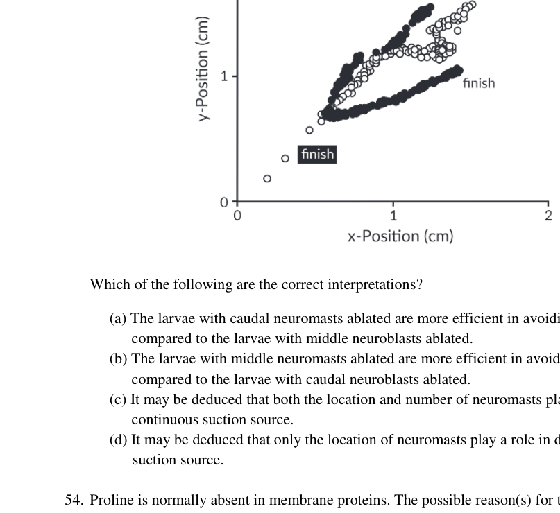
Zebrafish larvae position plots (MNA vs CNA) avoiding suction source at originTopic: Fluid Mechanics Metodi: Experimental Data Analysis, Physical Modeling Competenze: Experimental Data Analysis, Physical Reasoning Fonte: Testo (PDF) — p.16
Problema 54
Proline is normally absent in membrane proteins. The possible reason(s) for this can be:
(a) It is a hydrophobic amino acid. (b) It is unable to attain the required protein conformation. (c) It causes kinks in -helices. (d) It forms peptide bond as an amide and its nitrogen is not bound to any hydrogen.
Topic: Newtonian Mechanics Metodi: Physical Modeling Competenze: Physical Reasoning Fonte: Testo (PDF) — p.16
Problema 55
Enzymes from Hyperthermophiles, which grow optimally at temperatures between 80°C and 110°C show unique structure-function properties of high thermostability and optimal activity at temperatures above 70°C. The figure below illustrates the Hydrogen-deuterium exchange recorded in Sulfolobus acidocaldarius and porcine muscle cytosol adenylate kinases observed during a temperature gradient experiment.
Which of the following statements are correct in this context?
(a) At 20°C a much smaller fraction of the amide protons in S. acidocaldarius adenylate kinase are exchanged than in the porcine cytosolic enzyme indicating that more amide protons are involved in stable hydrogen bonds in the thermophilic enzyme. (b) Lesser rigidity explains why hyperthermophilic enzymes are often inactive at low temperatures (i.e., around 20 to 37°C). (c) Hyperthermophilic enzymes are less rigid than their mesophilic homologues at mesophilic temperatures and that rigidity is a prerequisite for high protein thermostability. (d) Temperatures of greater than 90°C are needed before S. acidocaldarius adenylate kinase can show an exchange level as compared to the catalytically active mesophilic enzyme.
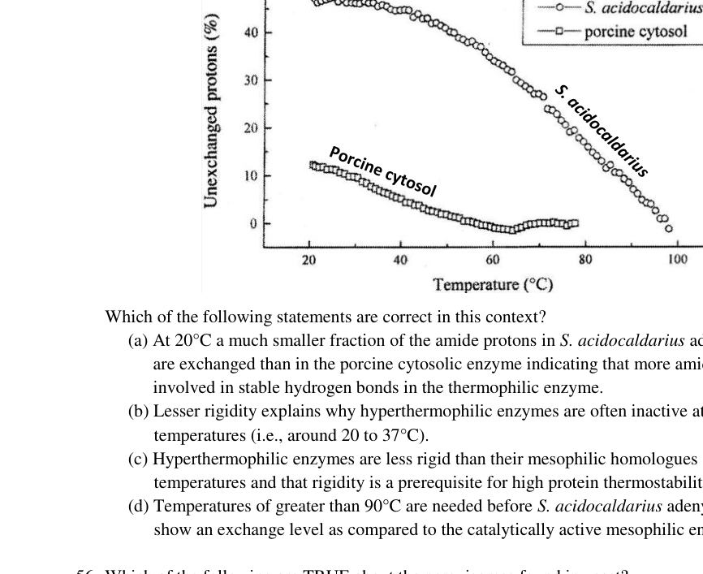
Hydrogen-deuterium exchange in thermophile vs mesophile adenylate kinases over temperature gradientTopic: Thermodynamics Metodi: Experimental Data Analysis, Graph Linearization Competenze: Experimental Data Analysis, Physical Reasoning Fonte: Testo (PDF) — p.17
Problema 56
Which of the following are TRUE about the peroxisomes found in yeast?
(a) They are not very active when yeast is cultured in the presence of glucose. (b) They can multiply only by fission. (c) They are very active when yeast is cultured in the presence of methanol. (d) They grow in size by incorporating proteins and lipids synthesized in the endoplasmic reticulum.
Topic: Thermodynamics Metodi: Physical Modeling Competenze: Physical Reasoning Fonte: Testo (PDF) — p.17
Problema 57
The C4 plants have relatively more efficient photosynthetic machinery. This may be attributed to:
(a) PEP carboxylase that has a higher affinity for CO and no affinity for O. (b) The entire dark reaction being carried inside a single cell type. (c) CO being concentrated in bundle sheath cells at the expense of ATP. (d) Fixing of CO even under low CO concentration.
Topic: Thermodynamics Metodi: Physical Modeling Competenze: Physical Reasoning Fonte: Testo (PDF) — p.17
Problema 58
2,6-Dichlorophenolindophenolate (DCPIP), an electron acceptor, turns colourless from blue colour when it is added to a suspension containing mitochondria. What does this indicate?
(a) DCPIP is getting oxidized. (b) DCPIP is getting reduced. (c) ETC carried out by mitochondria is leaky. (d) DCPIP acts as a respiratory substrate.
Topic: Electrostatics Metodi: Experimental Data Analysis, Physical Modeling Competenze: Experimental Data Analysis, Physical Reasoning Fonte: Testo (PDF) — p.17
Problema 59
In Batesian kind of mimicry a harmless animal (mimic) mimics a distasteful or poisonous animal (model) while in Mullerian type of mimicry, two related or unrelated distasteful or poisonous animals develop similar appearance. Which of the following statements about these types of mimicry are true?
(a) Mullerian mimicry benefits both prey and predator. (b) Batesian mimicry is a type of mutualistic relationship. (c) Batesian mimicry is an example of divergent evolution while Mullerian mimicry is an example of convergent evolution. (d) It is essential to have a common predator for Mullerian mimicry to evolve.
Topic: Newtonian Mechanics Metodi: Physical Modeling Competenze: Physical Reasoning Fonte: Testo (PDF) — p.18
Problema 60
Salt glands in Penguins are located at the top of the skull in a depression above the eye. The figure below depicts the relationship between relative salt gland depression size and percent fish in the diet of 10 penguin species. Relative salt gland depression size was calculated as the of depression surface area divided by cranial size index. Percentage of fish in diet was calculated using weighted mean percentage of fish consumed by a penguin species.
Which of the following statements are correct?
(a) Larger salt gland depressions correlating with a diet high in hyposmotic fish and smaller salt gland depressions correlating with a diet high in isosmotic marine invertebrates. (b) Larger salt gland depressions correlating with a diet high in isosmotic marine invertebrates, and smaller salt gland depressions correlating with a diet high in hypoosmotic fish. (c) Adélie penguin (P. adeliae) an outlier probably because they recently shifted from a mostly-krill to a mostly-fish diet. (d) Adélie penguin (P. adeliae) is an outlier probably because they recently shifted from a mostly-fish to a mostly-krill diet.
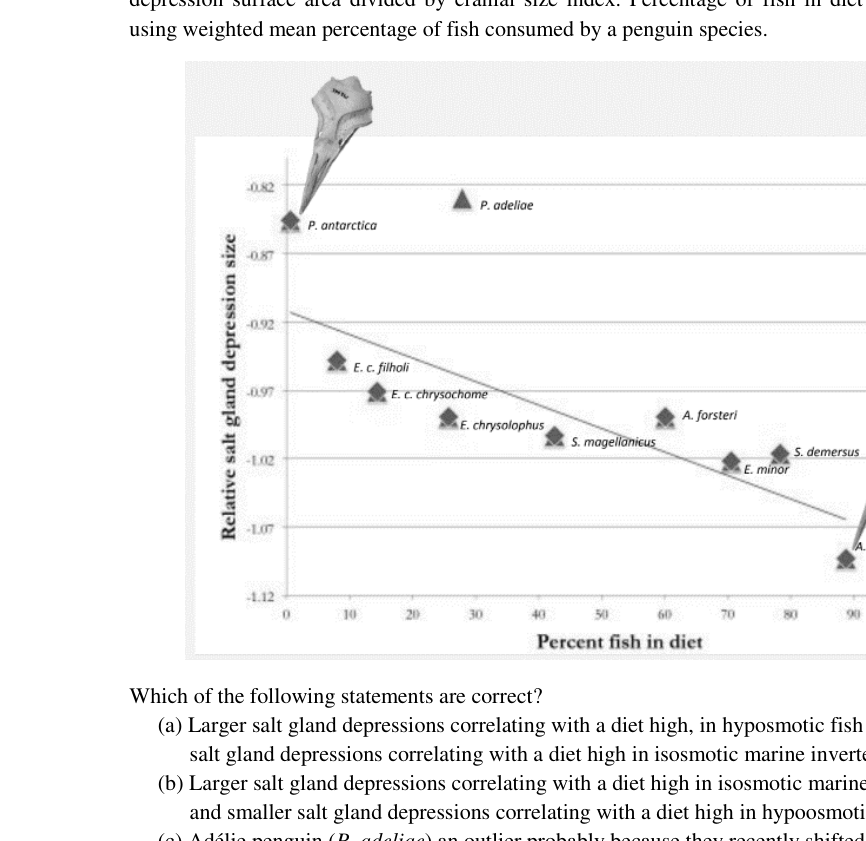
Relative salt gland depression size vs percent fish in diet across 10 penguin speciesTopic: Newtonian Mechanics Metodi: Experimental Data Analysis, Graph Linearization Competenze: Experimental Data Analysis, Physical Reasoning Fonte: Testo (PDF) — p.18